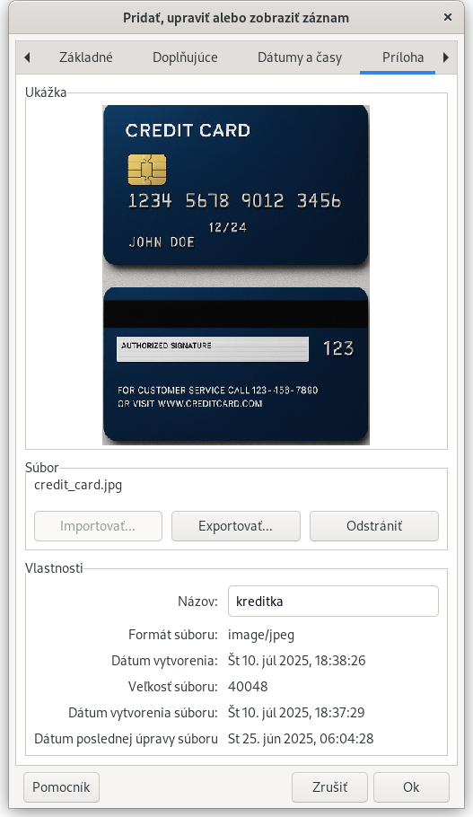

Zásady hesiel: pravidlá generovania náhodných hesiel
Karta Príloha

Na tejto karte môžete k záznamu priložiť obrázok alebo iný súbor ako prílohu: príkladom použitia je uloženie skenu pasu, kreditnej karty alebo vodičského preukazu.
Ak je prílohou obrázok, na tejto karte sa zobrazí jeho ukážka.
Názov: Môžete dať prílohe popis, ktorý nemusí mať žiadny vzťah k názvu súboru ktorý bol importovaný.
Súbor: Toto pole zobrazuje názov súboru, ktorý ste importovali. Z bezpečnostných dôvodov sa odporúča pôvodný súbor zmazať z disku (po uložení zmien záznamu), keďže už je v zašifrovanej podobe uložený v databáze.
Importovať: Prílohu môžete nahrať do databázy len ak ešte nie je žiadna nahratá alebo ak súčasnú prílohu odstránite.
Exportovať: Prílohu uloženú v databáze môžete exportovať do súboru na počítači.
Odstrániť: Odstráni prílohu z databázy, napr. keď už nie je potrebná alebo chcete následne importovať iný súbor do databázy.
Ak ste prílohu v skutočnosti nechceli odstrániť, stačí kliknúť na "Zrušiť" a následne "Zahodiť" a odstránenie sa nevykoná.
Ak ste však už aj klikli na "OK", odstránenie môžete stále vrátiť späť výberom možnosti "Vrátiť späť" v ponuke Upraviť (alebo stlačením klávesov Ctrl-Z).